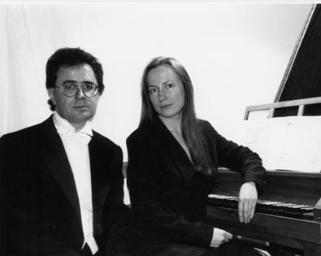

DUO DE CLAVECINS VATSEL - REGUANT
Intèrprets:
Marju Vatsel
Jordi Reguant
Programa:
Al llarg de la història musical, el duo de claves ha estat utilitzat per a diferents usos: amb finalitats
pedagògiques, establint un diàleg entre els dos personatges (Thomas Robinson), establint-se com a
duel entre instruments i intèrprets fins arribar a Le Roux que escriu el que es podrien considerar els
primers duets per a clavecins, on tota la gama de possibilitsts d'aquest peculiar duet és explotada.
Obres:
- Thomas Robinson (1589-1609)
- Gaspard le Roux (1660?-1007?)
- Antoni Soler (1729-1757)
- Luigi Boccherini (1743-1805)